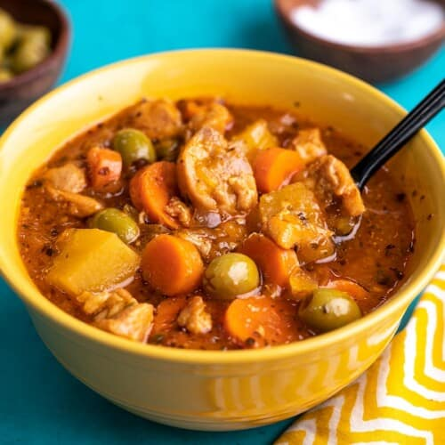

Pollo Guisado

Description
This is my favorite meal of all time. Eat over white rice. It is delicious.
Ingredients
- Chicken thighs
- Recaito (from Goya)
- Pidgeon peas
- Chicken broth
- Potatoes
- Carrots if you like
- Adobo seasoning
- Sazon seasoning
- Bay leaf
Steps
- With some oil in a large pot, season and sear the chicken thighs.
- Dice up some potatoes while the chicken sears.
- Put in the rest of the ingredients.
- Bring to a low boil and cover for a while.